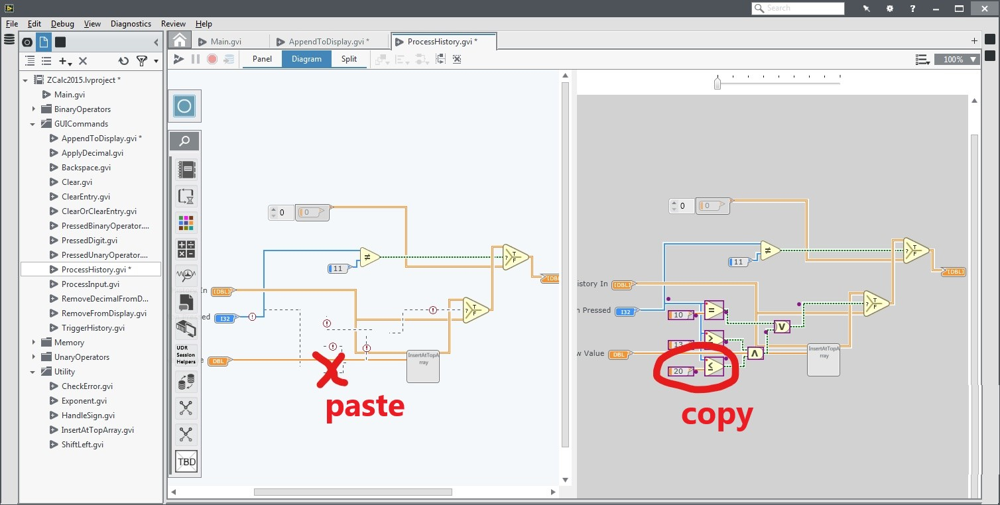

I work on AI + developer tools.
This is the second post in my series on design patterns that I use for quickly implementing features in large software projects that I'm unfamiliar with. Read the first post about my Object Dictionary pattern for more context.
When demo'ing experimental features to customers or running research studies, the software should never crash. Ever. But of course, it always does. In particular, the software I was working on included complex GUI systems and I would inevitably create a mess of the async tasks. Not fun to debug.
Since I didn't have time to test or fix all the issues properly, I resorted to this Catch All pattern. I essentially wrap all of the major components of the system with a try{} catch{}, and then do one of four things:
In some cases, we can simply catch the exception and retry whatever failed. To do this, you must have already identified the bug, put a try catch block quite low in the call stack, and know which action to retry. This helped me with race conditions, but I couldn't fix most bugs with this. It is worth trying though.
While testing the systems, I often found a handful of conditions that would cause a crash. Assuming I couldn't fix them in time, I would try to find ways to work around the issue. For some bugs, I knew exactly what the user was doing and can guess what the desired outcome should be. In these specific cases, we can improvise so that it looks like the system did something!
For example, Yestercode would crash every once in a while if the user tried to copy and paste an object from it's "history view". No idea why. To get around this, I would keep track of the last selected object in the history view. If an exception ever came from doing a paste action, I would fetch the reference of the last selected object in the history view and paste that instead. Clearly, this is not fool proof. There are probably many reasons why a paste could fail, but I was assuming it was because of my buggy feature involving the history view. Good enough!
There will also be bugs that we really don't know why they are happening, but we know what they are affecting. Our second to last effort is to simply revert the bad state to some prior good state. This is similar to the memento pattern.
If the system's component with the bad state was quite small and isolated, then we can periodically copy the component. When the exception occurs, we replace the component's reference with our copy.
However, this is likely to cause cascading problems (e.g., other references to the component aren't updated or we don't have the latest good state) so I use this approach sparingly. Luckily, it is very easy to implement. In one case, I found out that me doing this broke most of the menu actions in LabVIEW, but no one noticed!
As a last resort, we want to do anything to prevent the program from crashing. This will hide any bugs we didn't know about and it is sometimes a sufficient cover up for certain actions. This means wrapping a few components like:
try {
UpdateComponent();
} catch {
// Cross our fingers!
}
As an example, about 1 in 20 times the drag-and-drop in Patchworks would cause a crash. I couldn't track down the exact issue, so instead I caught the exception and did nothing. It is as if the drag-and-drop event never happen. The program did not crash.
To the user, it was rare enough that they would actually question whether they dragged the item correctly. Occasionally they might quietly say, "that was weird", but then they forget about it and move on. If you are giving a demo, you can just say "oops".
By applying these four strategies to catching exceptions, your program should be pretty well protected against violently crashing. You still need to do a lot of testing and debugging, but hopefully they will protect your demo from being a catastrophe. Remember, don't try these at work!